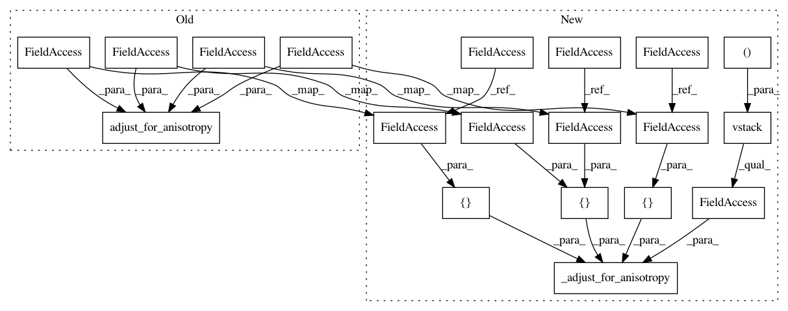

9b1af381e74ae4e967c0a3878353b3256f0aadab,pykrige/uk.py,UniversalKriging,__init__,#UniversalKriging#Any#Any#Any#Any#Any#Any#Any#Any#Any#Any#Any#Any#Any#Any#Any#Any#Any#Any#Any#,235
Before Change
point_log = np.atleast_2d(np.squeeze(np.array(point_drift, copy=True)))
self.point_log_array = np.zeros(point_log.shape)
self.point_log_array[:, 2] = point_log[:, 2]
x_adj, y_adj = core.adjust_for_anisotropy(point_log[:, 0], point_log[:, 1], self.XCENTER, self.YCENTER,
self.anisotropy_scaling, self.anisotropy_angle)
self.point_log_array[:, 0] = x_adj
self.point_log_array[:, 1] = y_adj
if self.verbose:
After Change
print("Plotting Enabled\n")
self.XCENTER = (np.amax(self.X_ORIG) + np.amin(self.X_ORIG))/2.0
self.YCENTER = (np.amax(self.Y_ORIG) + np.amin(self.Y_ORIG))/2.0
self.anisotropy_scaling = anisotropy_scaling
self.anisotropy_angle = anisotropy_angle
if self.verbose:
print("Adjusting data for anisotropy...")
self.X_ADJUSTED, self.Y_ADJUSTED = \
_adjust_for_anisotropy(np.vstack((self.X_ORIG, self.Y_ORIG)).T,
[self.XCENTER, self.YCENTER],
[self.anisotropy_scaling],
[self.anisotropy_angle]).T
self.variogram_model = variogram_model
if self.variogram_model not in self.variogram_dict.keys() and self.variogram_model != "custom":
raise ValueError("Specified variogram model "%s" is not supported." % variogram_model)
elif self.variogram_model == "custom":
if variogram_function is None or not callable(variogram_function):
raise ValueError("Must specify callable function for custom variogram model.")
else:
self.variogram_function = variogram_function
else:
self.variogram_function = self.variogram_dict[self.variogram_model]
if self.verbose:
print("Initializing variogram model...")
self.lags, self.semivariance, self.variogram_model_parameters = \
core.initialize_variogram_model(self.X_ADJUSTED, self.Y_ADJUSTED, self.Z,
self.variogram_model, variogram_parameters,
self.variogram_function, nlags, weight,
"euclidean")
if self.verbose:
if self.variogram_model == "linear":
print("Using "%s" Variogram Model" % "linear")
print("Slope:", self.variogram_model_parameters[0])
print("Nugget:", self.variogram_model_parameters[1], "\n")
elif self.variogram_model == "power":
print("Using "%s" Variogram Model" % "power")
print("Scale:", self.variogram_model_parameters[0])
print("Exponent:", self.variogram_model_parameters[1])
print("Nugget:", self.variogram_model_parameters[2], "\n")
elif self.variogram_model == "custom":
print("Using Custom Variogram Model")
else:
print("Using "%s" Variogram Model" % self.variogram_model)
print("Sill:", self.variogram_model_parameters[0])
print("Range:", self.variogram_model_parameters[1])
print("Nugget:", self.variogram_model_parameters[2])
if self.enable_plotting:
self.display_variogram_model()
if self.verbose:
print("Calculating statistics on variogram model fit...")
self.delta, self.sigma, self.epsilon = core.find_statistics(self.X_ADJUSTED, self.Y_ADJUSTED,
self.Z, self.variogram_function,
self.variogram_model_parameters,
"euclidean")
self.Q1 = core.calcQ1(self.epsilon)
self.Q2 = core.calcQ2(self.epsilon)
self.cR = core.calc_cR(self.Q2, self.sigma)
if self.verbose:
print("Q1 =", self.Q1)
print("Q2 =", self.Q2)
print("cR =", self.cR, "\n")
if self.verbose:
print("Initializing drift terms...")
// Note that the regional linear drift values will be based on the adjusted coordinate system.
// Really, it doesn"t actually matter which coordinate system is used here.
if "regional_linear" in drift_terms:
self.regional_linear_drift = True
if self.verbose:
print("Implementing regional linear drift.")
else:
self.regional_linear_drift = False
// External Z scalars are extracted using the original (unadjusted) coordinates.
if "external_Z" in drift_terms:
if external_drift is None:
raise ValueError("Must specify external Z drift terms.")
if external_drift_x is None or external_drift_y is None:
raise ValueError("Must specify coordinates of external Z drift terms.")
self.external_Z_drift = True
if external_drift.shape[0] != external_drift_y.shape[0] or \
external_drift.shape[1] != external_drift_x.shape[0]:
if external_drift.shape[0] == external_drift_x.shape[0] and \
external_drift.shape[1] == external_drift_y.shape[0]:
self.external_Z_drift = np.array(external_drift.T)
else:
raise ValueError("External drift dimensions do not match provided "
"x- and y-coordinate dimensions.")
else:
self.external_Z_array = np.array(external_drift)
self.external_Z_array_x = np.array(external_drift_x).flatten()
self.external_Z_array_y = np.array(external_drift_y).flatten()
self.z_scalars = self._calculate_data_point_zscalars(self.X_ORIG,
self.Y_ORIG)
if self.verbose:
print("Implementing external Z drift.")
else:
self.external_Z_drift = False
// Well coordinates are rotated into adjusted coordinate frame.
if "point_log" in drift_terms:
if point_drift is None:
raise ValueError("Must specify location(s) and strength(s) of point drift terms.")
self.point_log_drift = True
point_log = np.atleast_2d(np.squeeze(np.array(point_drift, copy=True)))
self.point_log_array = np.zeros(point_log.shape)
self.point_log_array[:, 2] = point_log[:, 2]
self.point_log_array[:, :2] = _adjust_for_anisotropy(np.vstack((point_log[:, 0], point_log[:, 1])).T,
[self.XCENTER, self.YCENTER],
[self.anisotropy_scaling],
[self.anisotropy_angle])
if self.verbose:
print("Implementing external point-logarithmic drift; number of points =",
self.point_log_array.shape[0], "\n")
In pattern: SUPERPATTERN
Frequency: 3
Non-data size: 19
Instances
Project Name: bsmurphy/PyKrige
Commit Name: 9b1af381e74ae4e967c0a3878353b3256f0aadab
Time: 2017-01-27
Author: rth.yurchak@gmail.com
File Name: pykrige/uk.py
Class Name: UniversalKriging
Method Name: __init__
Project Name: bsmurphy/PyKrige
Commit Name: 9b1af381e74ae4e967c0a3878353b3256f0aadab
Time: 2017-01-27
Author: rth.yurchak@gmail.com
File Name: pykrige/ok.py
Class Name: OrdinaryKriging
Method Name: execute
Project Name: bsmurphy/PyKrige
Commit Name: 9b1af381e74ae4e967c0a3878353b3256f0aadab
Time: 2017-01-27
Author: rth.yurchak@gmail.com
File Name: pykrige/uk.py
Class Name: UniversalKriging
Method Name: __init__
Project Name: bsmurphy/PyKrige
Commit Name: 9b1af381e74ae4e967c0a3878353b3256f0aadab
Time: 2017-01-27
Author: rth.yurchak@gmail.com
File Name: pykrige/uk.py
Class Name: UniversalKriging
Method Name: execute